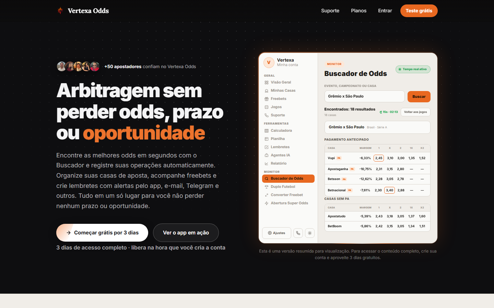

about
plataforma de arbitragem esportiva que compara odds, encontra surebets, organiza freebets e promoções e mantém a banca sob controle.
arbitrage, freebets
& bankroll managementweb app / live

visit site ↗plataforma de arbitragem esportiva que compara odds, encontra surebets, organiza freebets e promoções e mantém a banca sob controle.
nasceu da falta de uma ferramenta que reunisse busca, operação e organização no mesmo lugar.
produto, interface e desenvolvimento do web app.